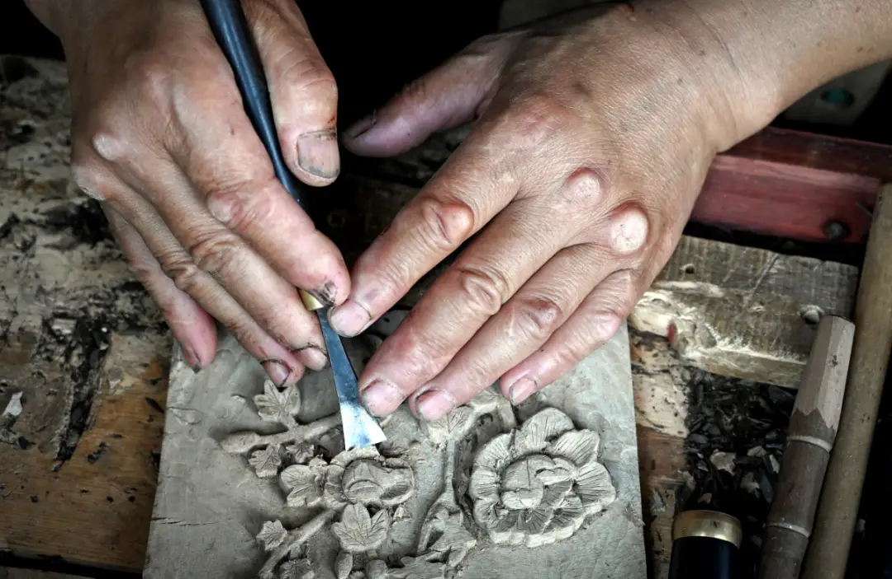
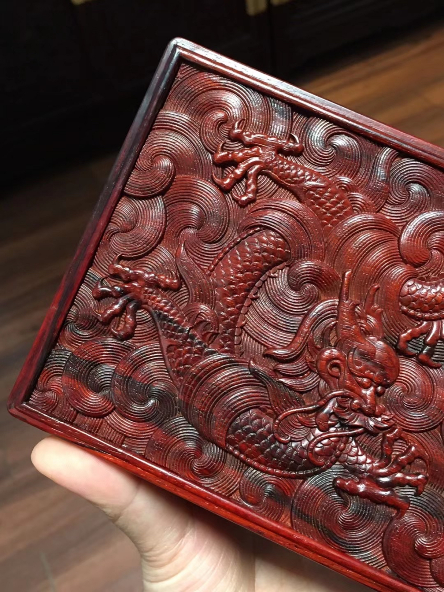
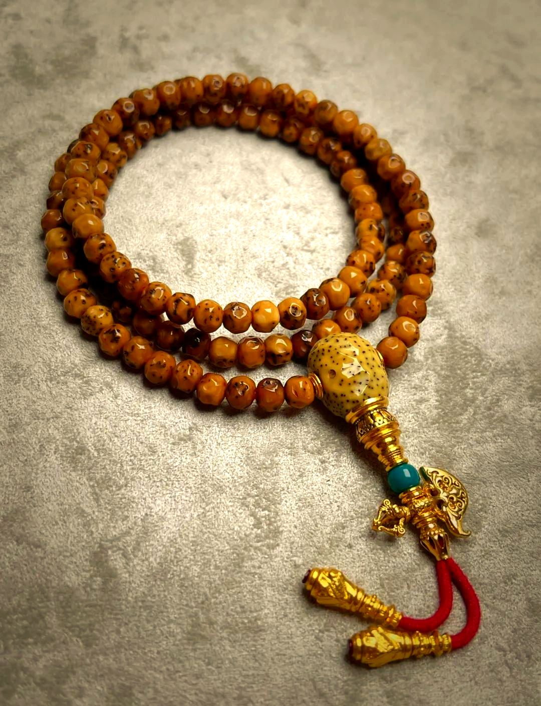
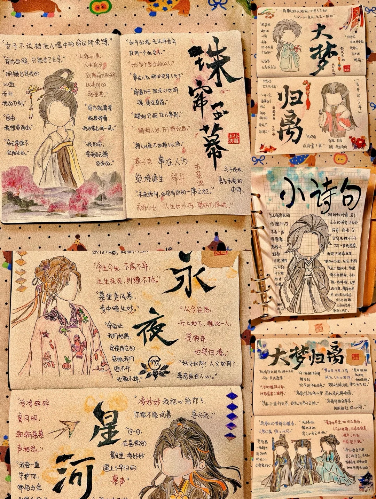
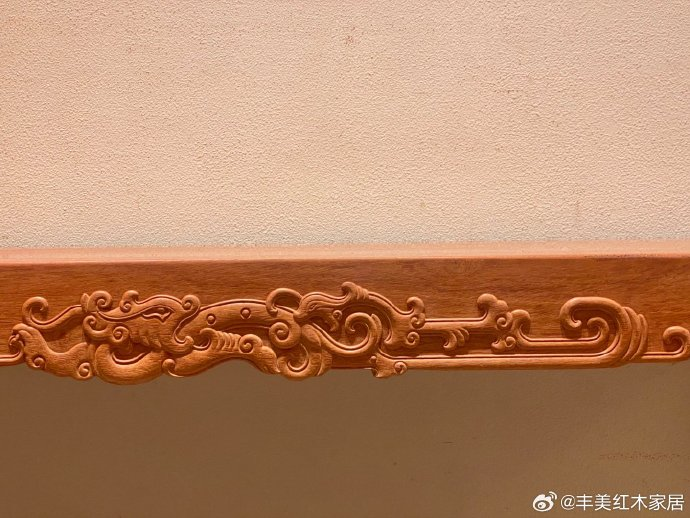
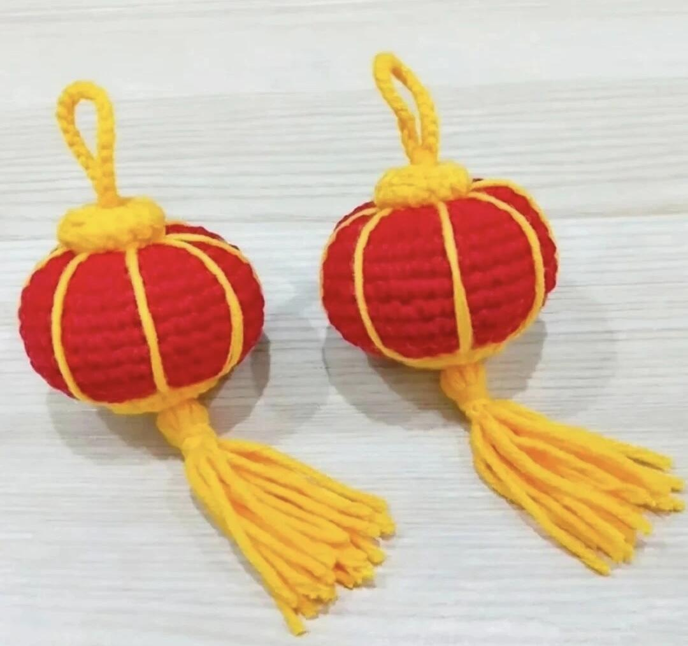
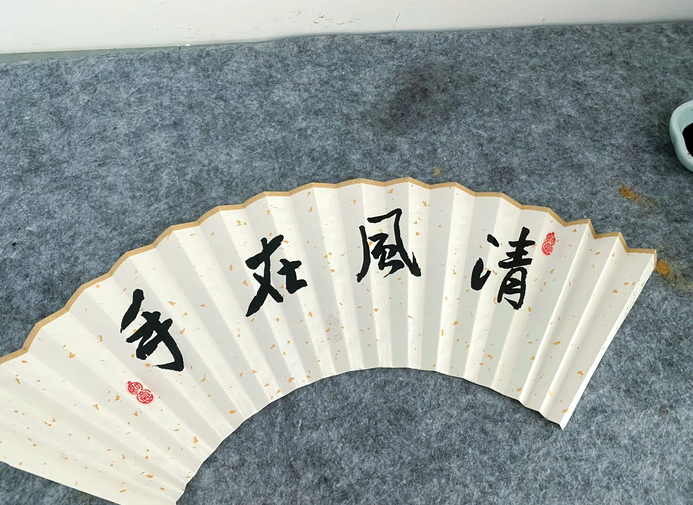
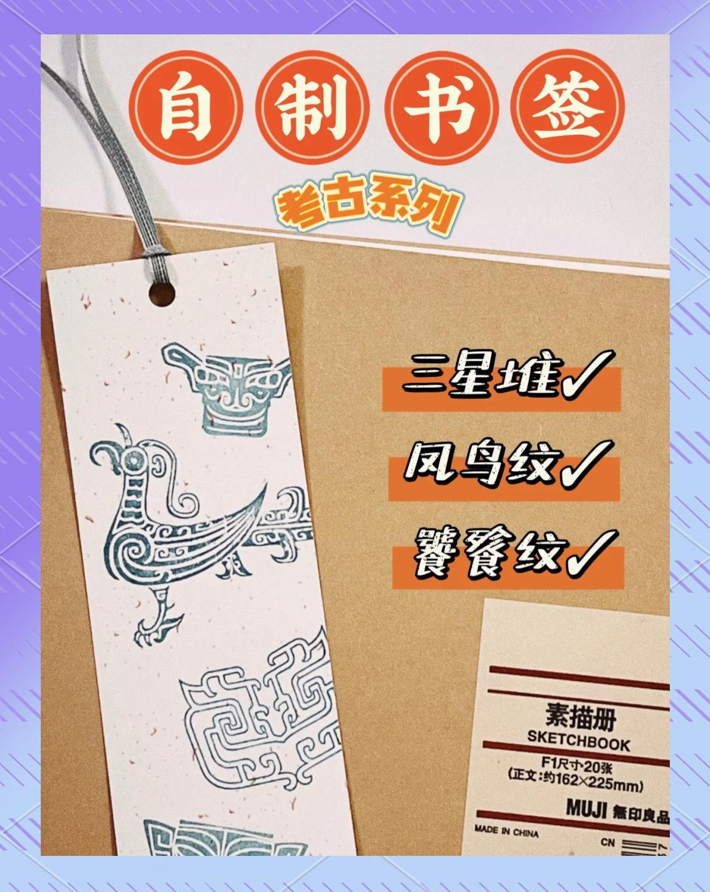
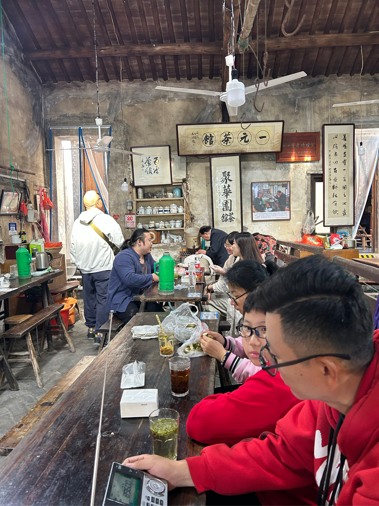

文创理念

走马古镇文创，不是工业流水线上的复刻，而是从一件器物里读出一座古镇。我们与本地木雕匠人、说书艺人、茶馆掌柜共同打样，让每一个挂件、每一本手账、每一枚书签，都能讲出一段古镇故事。
挂件上的纹样，取自老墙上的花窗；手串上的木珠，来自古镇修缮替换下的老屋梁柱；扇面上的题字，皆为说书艺人现场誊写。古意，不是装饰，而是出处。

走马古镇文创，不是工业流水线上的复刻，而是从一件器物里读出一座古镇。我们与本地木雕匠人、说书艺人、茶馆掌柜共同打样，让每一个挂件、每一本手账、每一枚书签，都能讲出一段古镇故事。
挂件上的纹样，取自老墙上的花窗；手串上的木珠，来自古镇修缮替换下的老屋梁柱；扇面上的题字，皆为说书艺人现场誊写。古意，不是装饰，而是出处。

实体挂件，镌刻法治标语与古镇图腾，寓意以法为钥、守护文化，便携易传播。

天然环保材质，搭配古镇专属纹样，唯一编码绑定小程序，可查看古树生长数据与许愿牌定位。

线索式内页设计，搭配法治格言贴纸，实用兼具趣味，可扫码查看普法知识点拓展内容。

选取古镇穿斗式建筑代表纹样，匠人手工复刻，可作书房案头清供。

1:5复刻古镇巷弄红灯笼，可挂可摆，灯穗手工编织，附走马驿道印章一枚。

仿宣纸扇面，印有走马民间故事开篇之言，扇骨竹刻"一脚踏三县"题字。

铜质做旧工艺，正面刻马帮纹样，背面刻"走马古镇"印章，附麻绳穗一束。
收录走马民间故事十二篇，水墨插画，烫金题字，适合大人小孩共读。
含案件文书复刻、证物书签、判词印章一套，可作剧本杀爱好者的收藏礼盒。
How They Are Made
采集古镇老屋拆改时替换下的旧木、本地竹丝、宣纸边角，做到物尽其用。
从古镇花窗、戏楼匾额、说书底本中提取纹样元素，由设计师与匠人共同打样。
木雕、铜刻、扇面绘制、灯笼缠丝，皆由本地匠人手工完成，不上流水线。
每件文创出厂前，由古镇文化中心三人小组审样，纹样错版、字迹潦草者一律返工。
素色草纸包装，附手写姓名签与古镇邮戳，让每一件文创都有温度。
从古镇后街文创工坊直接发货，附赠走马驿道明信片一张。

工坊设在古镇后街的一间老木屋里，原是清末驿站马夫的居所。如今木窗依旧，刨花未净——只是房中坐着的，是十二位本地匠人。
木雕陈师傅、铜刻刘师傅、扇面金师傅、灯笼黄阿姨……他们用半生的手艺，让你看见的每一件文创，都不是商品，而是一份被慢慢做出来的礼物。
What People Say
"红灯笼挂在我家书桌前，每次抬头都像看到那条石板巷的夜。包装还附了一张手写的姓名签，太用心了。"
"南瓜案周边盒打开的瞬间真的有进入剧情的感觉，文书复刻和判词印章很扎实，剧本杀爱好者狂喜。"
"给班里十几个孩子每人买了一本插画绘本作为奖品，孩子们抢着看，说好几个故事都很想去走马看看。"
选中文创，加入购物车，登录后在个人中心一键结算；也可在古镇线下文创铺扫码自提。
古镇统一打包，48小时内由本地邮政寄出。包邮区为西南五省，其余地区运费另计。
七日内非人为损坏可换新。手作类因纹样略有差异属正常工艺，请安心收藏。